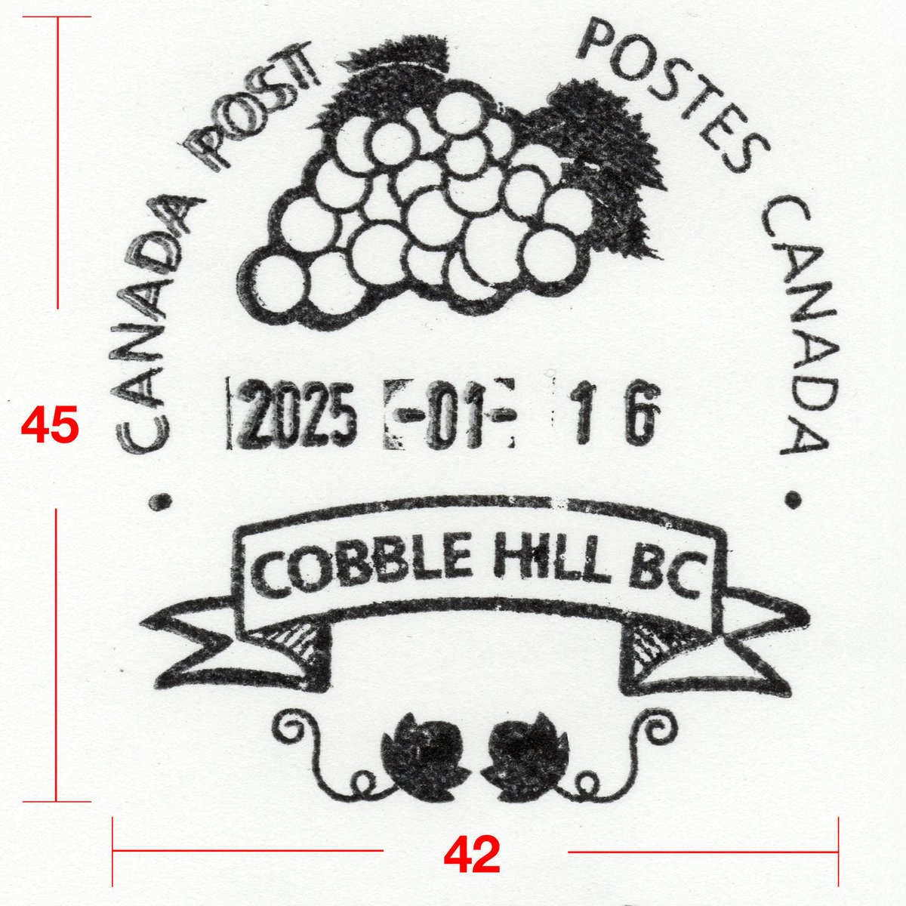

Cobble Hill PO pictorial cancel
Grapes
- Status
- Active
- Run dates
- 2019-01-01 to 2030-12-31
- Design
- grapes
- Ink colour
- Black
- Designer
- Jeffery Bird
- Post office
- Cobble Hill PO
3559 Garland Ave
Cobble Hill, BC
V0R 1L0 - Subjects
- fruit, food, plant, grape
Collect it by mail. Send your stamped covers, with a stamped return envelope, to the post office address above. How to collect pictorial cancels by mail · en français
 Salt Spring Island STN Fulford HarbBird, mountain
Salt Spring Island STN Fulford HarbBird, mountain Salt Spring Island STN GangesOrca (killer whale), water
Salt Spring Island STN GangesOrca (killer whale), water Sooke STN MainFalls
Sooke STN MainFalls